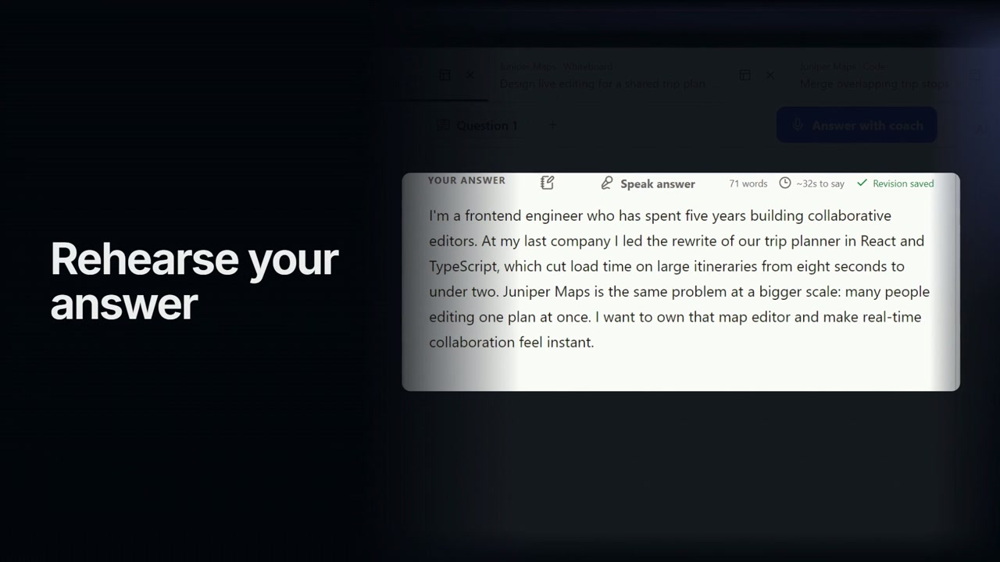
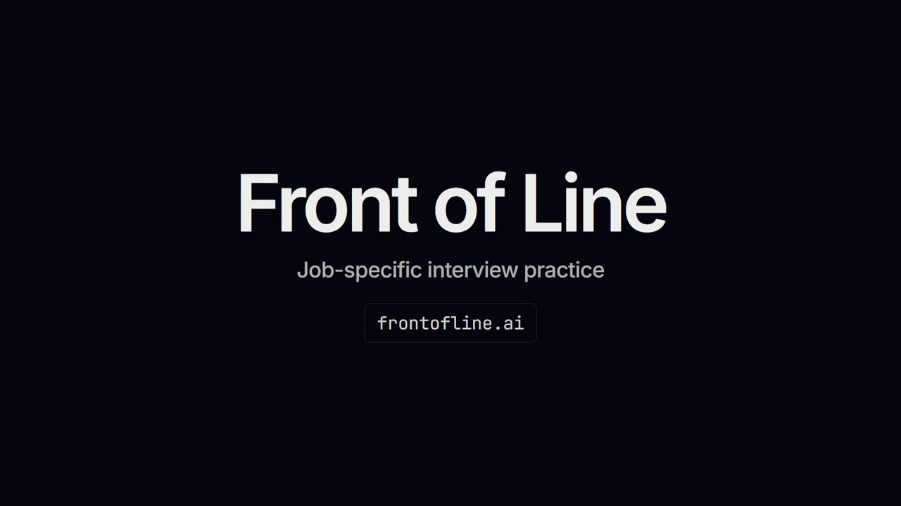

Context
Practice organized around a specific job and room.
Front of Line
An interview-preparation workspace with coding practice, voice and chat coaching, and structured feedback.
Practice organized around a specific job and room.
Coding and collaborative practice in the workspace.
Structured evaluation tied to answer and context revisions.

